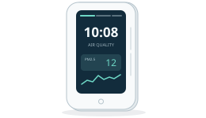

TC1
TC1 智能排插
六路独立开关、功率与电量、定时、童锁。
IoTCloud · 社区维护
为 TC1、M1、A1、S30-V1B 与大金 G1/G2、G3 提供社区固件。本地网页控制，接入 MQTT、Home Assistant，或使用 IoTCloud 集中管理。
01 / 设备与功能
每款设备保留熟悉的本地操作，也能接入同一套管理工具。
TC1
六路独立开关、功率与电量、定时、童锁。
M1
PM2.5、甲醛、温湿度、屏幕亮度与 A1 联动。
A1
风机、自动模式、滤芯、灯环、夜间模式与多检测仪联动；另有新风版。
S30-V1B
独立开关、电压、电流、功率与累计电量，支持计量校准。
DAIKIN
PM2.5、PM10、CO₂、温湿度、TVOC 与可选甲醛，支持 A1 联动。

DAIKIN G3
空气质量读数、时钟、天气与自定义屏幕布局。
TC1 的 A1 硬件版本与 A1 空气净化器是不同产品，固件不能混用。TC1 A2 不受支持。M1 / A1 适用于原装 EMW3080B / MK3080B；大金按教程核对具体型号；G3 BRY88BBA15G 为 8 MB、独立镜像。
配网后访问设备 IP，即可控制和设置。无需注册平台账号，也可接入自己的 MQTT / Home Assistant。
MQTT / Home Assistant →IoTCloud 用一个账号管理多台设备。China / US 节点的账号与数据独立；也可自行部署。
独立于 Wi-Fi 模块，扩展颗粒物详情、CO₂ 屏幕显示和 RTTTL 音乐，采用 GPL-3.0。推荐原厂 11.x 使用；17.1.2.3 / 17.x 差异较大、待分析，暂不建议迁移。普通 Wi-Fi OTA 不会更新主控，基本空气读数无需另刷。
演示使用模拟数据，不控制真实设备。
02 / 安装升级
首次安装先确认硬件、备份和供电。已安装社区固件的设备，请使用对应更新入口。
先选设备，再找刷机、升级、使用和恢复。
v0.9.27 为稳定版；RC 版本用于 Beta 测试，新增 S30-V1B 支持。
正在校验候选版下载…
正在读取版本归档…
旧版本供查阅和恢复；按机型与版本选择镜像。
主控与联网固件版本相互独立。使用最新兼容组合；原厂 11.x 迁移须具备整包缓冲转发能力，详见主控升级教程。
推荐原厂 11.x；17.1.2.3 / 17.x 暂不建议迁移。应用 OTA 不更换 Boot；原厂整片备份不能用于应用 OTA。
正在读取主控版本…
按硬件与组件选择，与社区固件版本分开存放。
e1dacd09eebeeaf847f2136498132bd956a9e4a30787c879de668c9a7908a2d16a8a9f72741e01d5ebc73467819079146553ec73339029eaf4cc49e8cbd1a7f93d916ba30e224ef9ecbc630bfe41d337140256180fac66fcf0e36de86e8f40c9cfbc630eb213dbe4333c8a10e51ea7796b0ad246acc257bb9499383e2fa490e90f0a21991df533d01c21cafba208255810bc1bdbe4161b95b5b2bb760fbba9b8256fb6486ab07b60f983bbd94535311e74ef17f63db9a87fa511d1349064b83df8cb15df4af963ad2e6461daf73a4d77b67e19c04887c76b4d1f22b148a77aefa28b436e4953abb7b05fe08382cf4a8e76f5e18aed37373263ac1ff96826596096e7a0058d1937e082bc216da2baee90a9abb349846077d40a64ee2ff933869774d47b6b88638e5489e87154c3274f345dad7cadd03d29610b71edc966c2634c9bf014e2692d0e88f48fc30d7a9956f43ce24da034ad5d02db60028a7ce16ea11d0b848af6195b39849260a3c9ff2a020d574ca9b98c2c2665d2278f349796c2ccb9d414186c5ea47823badf5083f7ab5b1b61b02c6a8d0510af6ee31bebdf09b4b361b6f58297bc6d5d0f96057ca60e3389c87508ab6a1f515d3bd00ec98c5903 / 常见问题
不需要。设备配网后可直接使用本地网页，MQTT 和 Home Assistant 也可在局域网部署。
不能。联网模块与传感器主控分别升级，扩展功能要同时满足版本与能力要求。原厂 17.x 暂不建议迁移到开源主控。
DAIKIN hub 提供 Beta 版本。Apple 家庭采用实验性 HAP 桥接，暂不提供 Matter。
先核对型号与版本，再按故障排查和对应安装教程恢复。提交问题时附上复现步骤，去掉密码和令牌。
04 / 参与开发
HTTP / MQTT、主控协议、配置兼容性与测试向量集中维护，适合固件、前端、平台和自动化开发者。
联网固件维护代码采用 GPL-3.0，SDK 与第三方组件保留各自声明。
按型号选择固件，功能与版本要求见更新日志。